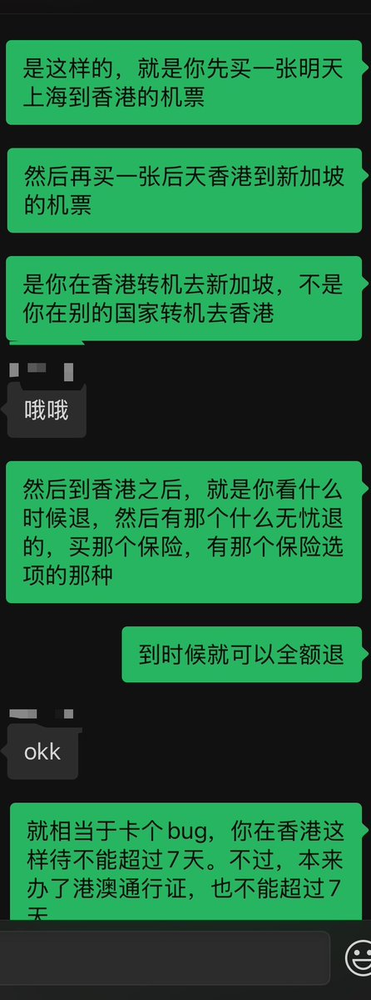
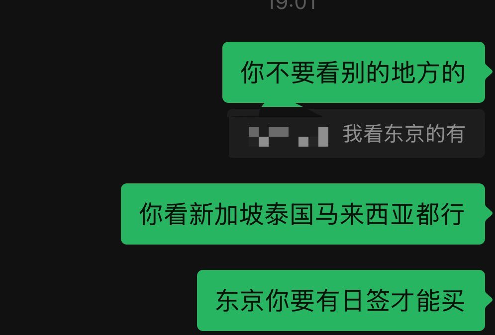
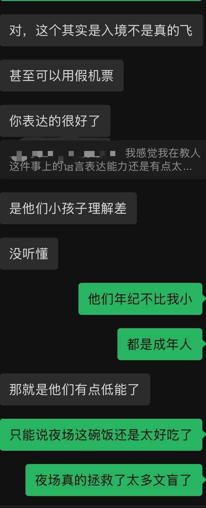

@Mintink3 确实，如果我来说，我会强调：买一张香港--外国的机票，然后拿着护照和机票入境，入境后退掉机票。
对于没有什么出国经历的人，转机这个词会造成误解，同时强调两端航程有可能导致他们自动弥合成利用第三国做跳板入境
对于蠢人确实得全面按他们的逻辑思考，这也是我厌蠢的原因

对于没有什么出国经历的人，转机这个词会造成误解，同时强调两端航程有可能导致他们自动弥合成利用第三国做跳板入境
对于蠢人确实得全面按他们的逻辑思考，这也是我厌蠢的原因



我真的不适合当一个老师🥲我的厌蠢症无法控制 我没有足够的耐心
只能说夜场还是拯救了太多文盲 夜场的钱还是太好赚了
我在教几个没有港澳通行证的女模以来香港转机去新加坡的理由来入境香港陪客户玩几天
我觉得我说的很清楚了 我说让她们买香港转机新加坡的 https://t.co/MnmiXxXcUm
只能说夜场还是拯救了太多文盲 夜场的钱还是太好赚了
我在教几个没有港澳通行证的女模以来香港转机去新加坡的理由来入境香港陪客户玩几天
我觉得我说的很清楚了 我说让她们买香港转机新加坡的 https://t.co/MnmiXxXcUm